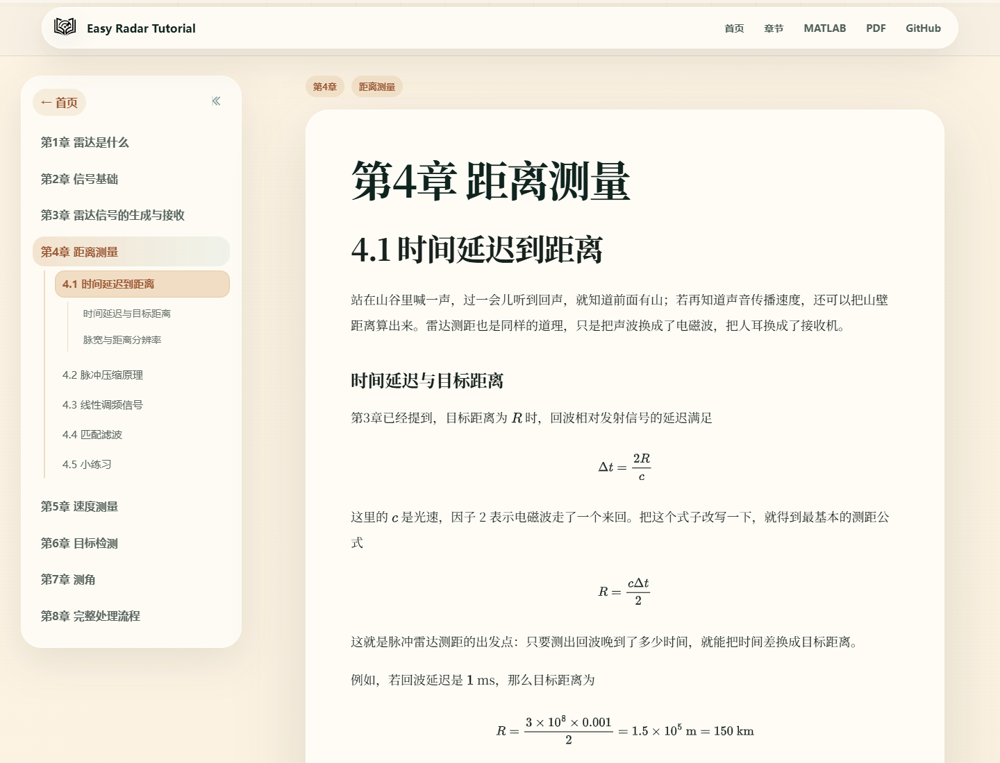
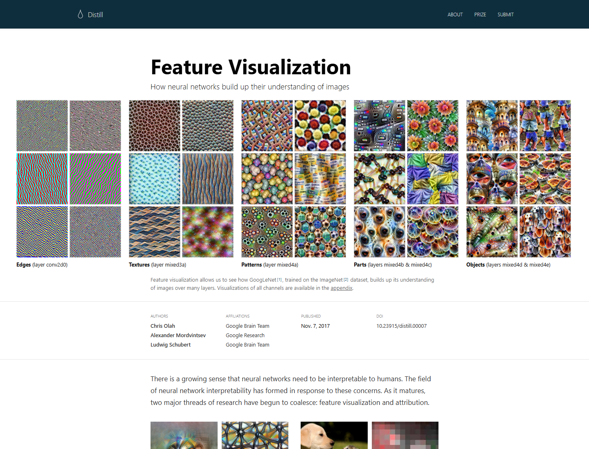
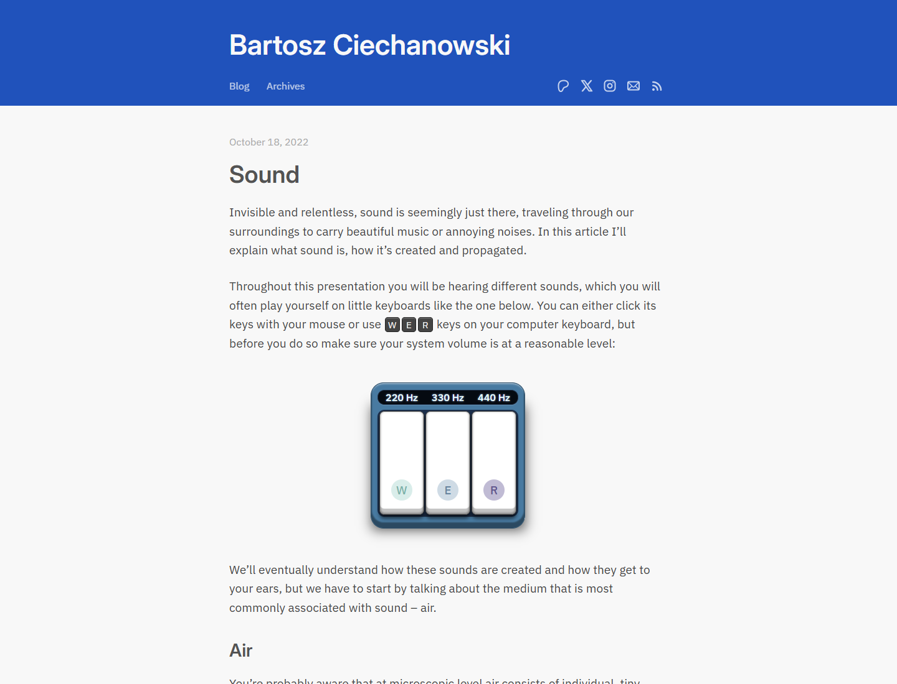
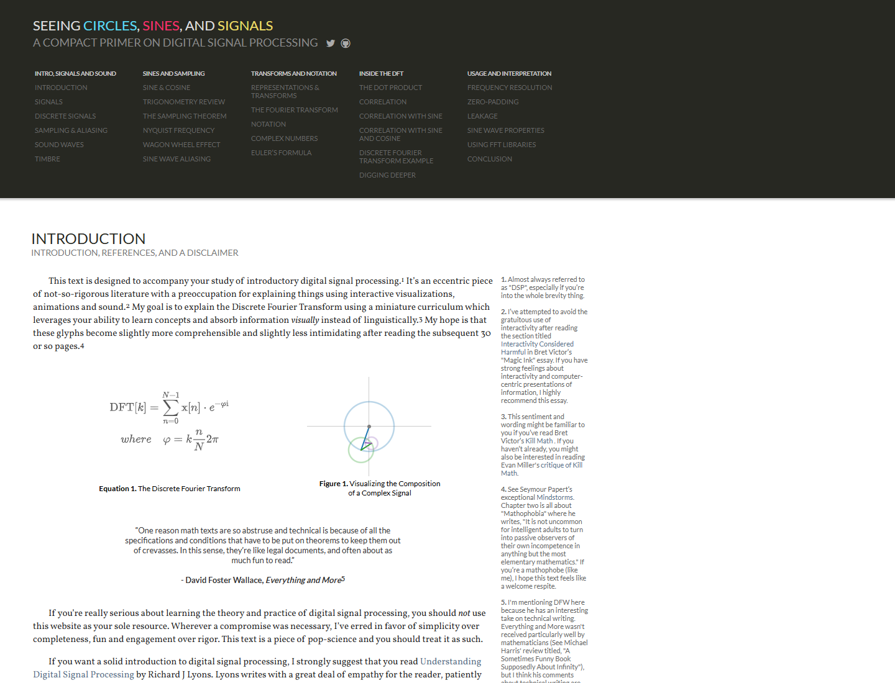
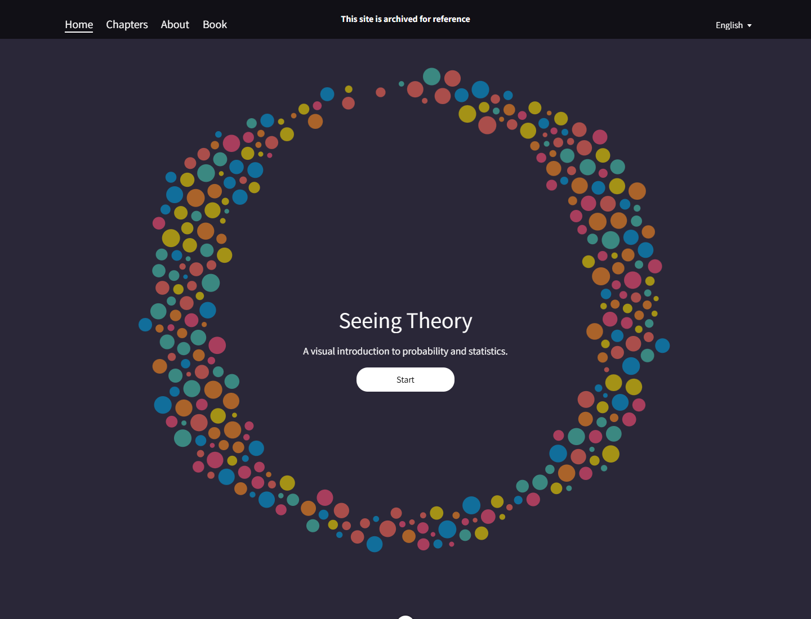
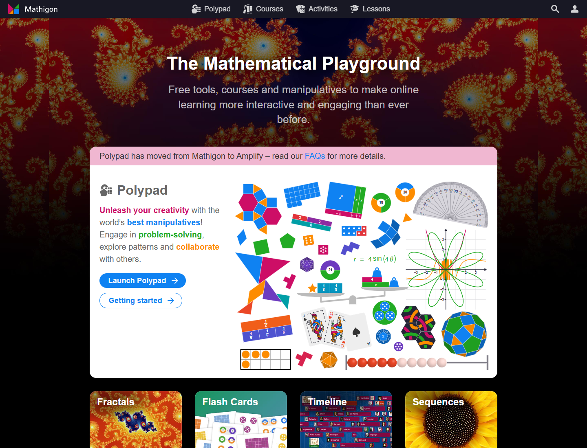
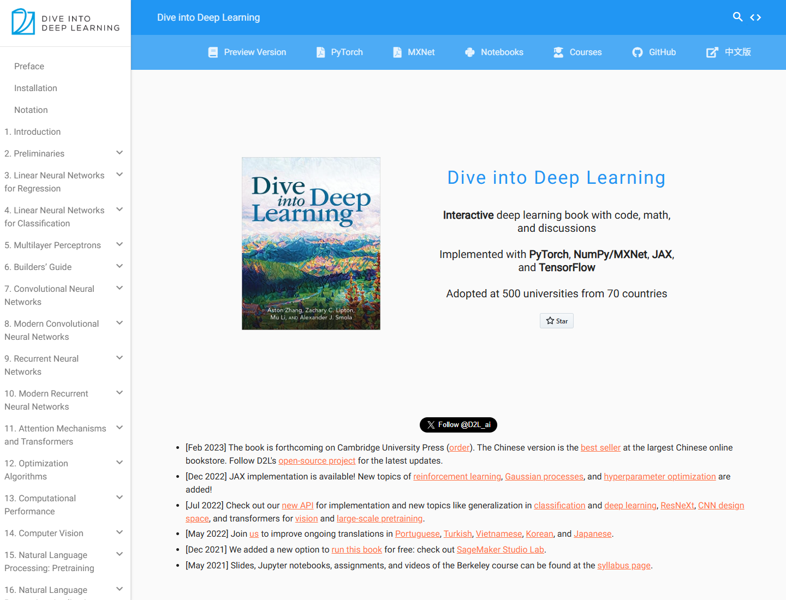
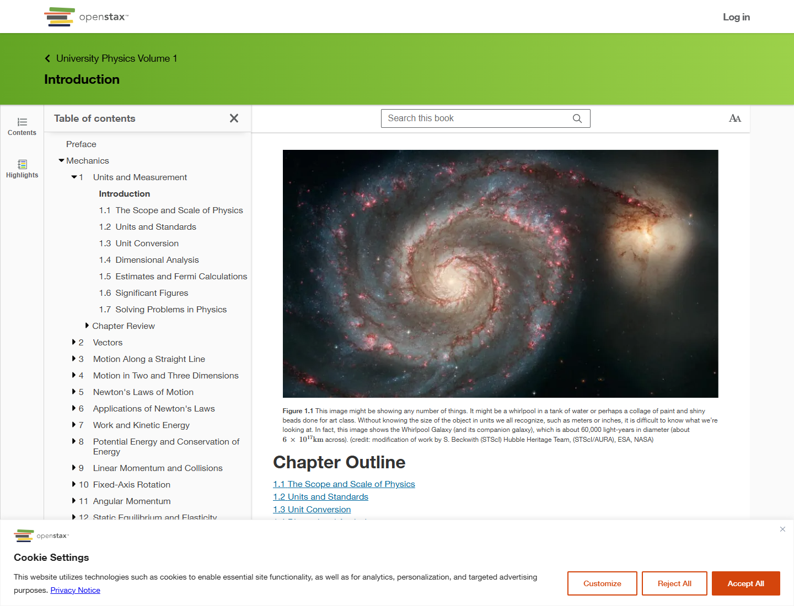
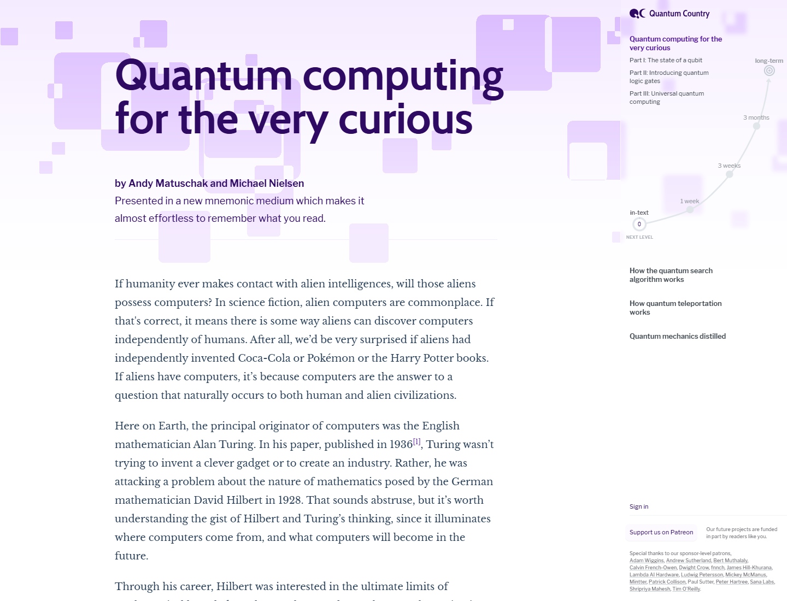

Quick references
Easy Radar Tutorial
雷达信号处理网页阅读体验参考
你的站点首页已经有明确的“暖纸张 + 雷达仪表”气质。下一步最有收益的不是再堆装饰，而是把章节页做成真正帮助理解的在线教材：图文节奏、公式卡、互动入口、学习地图和轻量检查。
Current State

Key Patterns
- 解释节奏：文字、公式、图、互动需要交替出现，读者每一屏都知道自己正在理解什么。
- 学习地图：目录不仅是跳转列表，还要显示当前位置、下一节、章节关系和搜索。
- 图承担推理：技术图应表达输入、处理、输出和参数变化，而不是只做配图。
- 旁路帮助：术语卡、公式卡、MATLAB 对应脚本、检查题可以减少掉队。
- 首页路径感：8 个章节可以进一步连成雷达处理链。
References
Magazine-grade technical explainer


Signal-processing-native visual learning

Interactive concept playground


Online book infrastructure


Retention and progress

Apply To Your Site
1. 阅读页加“理解辅助右栏”
+-------------------------------------------------------------+
| top nav |
+------------+--------------------------------+---------------+
| chapter | article | concept rail |
| toc | h1 / h2 / prose / math / figs | key formula |
| | | variables |
| | | matlab link |
| | | checkpoint |
+------------+--------------------------------+---------------+优先试点第4章“距离测量”：公式、图、代码、直觉例子都齐，最容易看出收益。
2. 关键公式变成“公式卡”
+--------------------------------------------------+
| R = c * Delta t / 2 |
|--------------------------------------------------|
| c: 光速 Delta t: 往返延迟 /2: 来回路程 |
| 工程直觉: 多等 1 us，目标距离就多约 150 m |
+--------------------------------------------------+3. 首页章节卡片升级成“雷达处理链”
目标/场景 -> 信号基础 -> 发射接收 -> 距离 -> 速度 -> 检测 -> 测角 -> 完整流程4. 互动工具内嵌进章节
把已有 interactive-tools 作为章节内“试一试”模块：距离压缩工具放第4章，RDM 放第5章，CFAR 放第6章。
5. 每节末尾加轻量检查
你现在应该能回答：
[ ] 为什么雷达距离公式要除以 2？
[ ] 如果回波延迟 1 ms，目标距离是多少？
[ ] 距离分辨率为什么和脉宽有关？Suggested Priority
- 第4章阅读页试点：公式卡、概念右栏、章节内互动入口。
- 首页学习路径：在 hero 和章节卡之间加雷达处理链。
- 互动工具内嵌：把工具从独立页带回对应章节。
- 正文图语言统一：先做第4章和第5章。
- 在线书功能：搜索、字号、上一节/下一节、公式复制、MATLAB 链接卡。
Sources
Distill · Ciechanowski · Seeing Circles, Sines, and Signals · Seeing Theory · Mathigon · D2L · Quantum Country · OpenStax